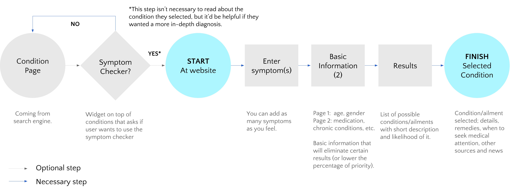
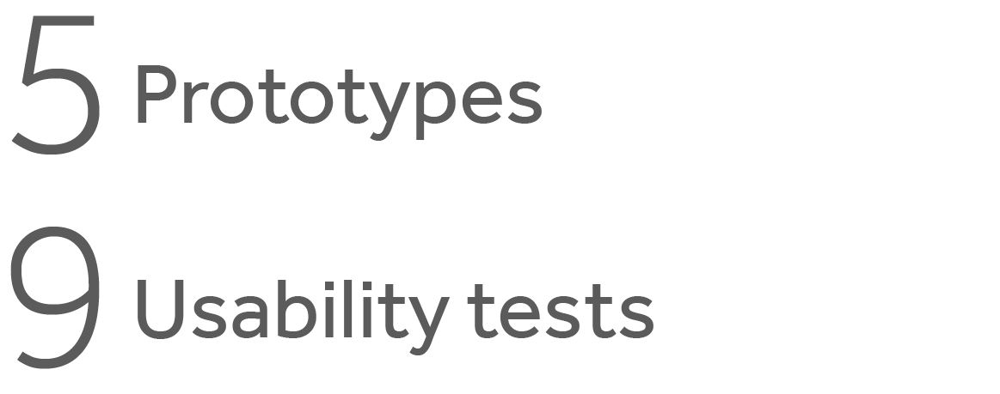

medic
With increase access to the internet, a large majority of users will self-diagnose when something doesn’t feel right; it has become the norm. People still go to doctors, but often their first step is to see if they can treat it themselves first.
I suspect that people find it difficult to find and trust the diagnoses presented to them on the internet.
Kind of like this:

I wanted to see if there were others that felt this way, what was out there, and also to see what can be done to alleviate this stressful experience.
Research Scope

Findings
A large population of people use the internet for medical purposes when something doesn’t feel right.

People search for their ailments for many reasons and have varying thoughts regarding using the internet and doctors. A large majority will use the internet as a first step, even though they feel that no site truly catered to all. They also know that can't trust everything on the internet (the internet doesn't make you a doctor!).
I want to know immediately what I may have so I can treat it myself or get to the doctor if needed.”
People searching for their health issues use search engines and then check and verify via multiple links (depending if it’s for self-diagnosing or for knowledge). While there are multiple reputable sites, users still tend to look around to confirm their diagnosis or see if it's serious enough to warrant a doctor's visit.
I want to see what my treatment options might be before spending the money on a doctor visit.”
During my research, I came across a symptom checker. It's a tool that helps narrow down your condition; based on symptoms you input, along with some general health-related questions. I found that this tool could be a way to make diagnosing simplier and with better results than the usual route of using a search engine.
I think it’s helpful to have an idea of what you have because it helps prepare you to have a conversation with your doctor.”
Competitor Analysis
There's not a consistent way competitors tackle symptom trackers.
Some major sites have it, however, they don't highlight the checker (or even make it easy to find). Other sites put it at front and center, but aren't as well known. This tells me that there's room to improve symptom checkers; the more trusted sites has developed their version of the tool as an add-on to their site but doesn't necessarily know what to do with it/where to place it.


Proposal
The internet cannot act as a physical doctor, however, there are ways to make it more efficient for the user to self-diagnose and/or find the information they are looking for.
- Spotlighting a symptom checker that relies on the same algorithm that doctors use to come up with a diagnosis and having the results in a more digestible, consumer-friendly.
- Make it simpler to review and verify their results through multiple resources.
- Have information on when they should seek medical attention and a list of questions they can ask to help the doctor with the diagnosis. The long-term goal is to eventually change the way users search symptoms/conditions (just use our site).
User Flow
With the understanding that in the early stage, we cannot expect users to enter our site as a start point, I've created a more realistic user flow based off how users currently search; the START (homepage) is a few steps in.
Testing Scope
The Product
Ideations and sketches...